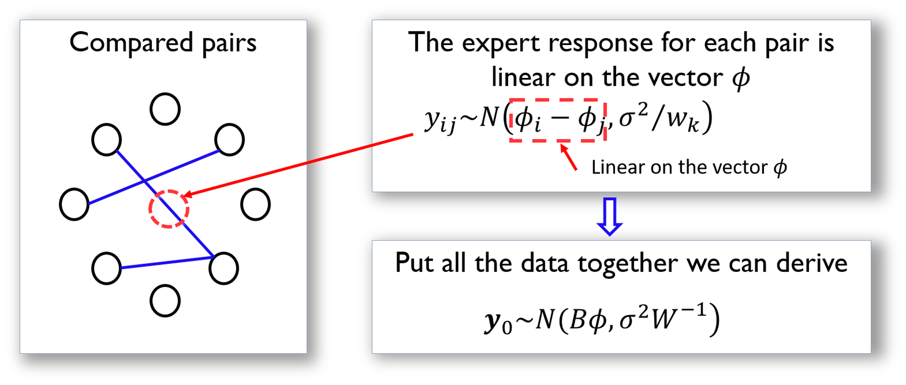

In recent years, we have witnessed a growing interest in estimating the ranks of a list of items. This same problem could be found in a variety of applications, such as the online advertisement of products on Amazon or movie recommendation by Netflix. These problems could be analytically summarized as: given a list of items denoted by \(\boldsymbol{M}=\left\{M_{1}, M_{2}, \ldots, M_{p}\right\}\), what is the rank of the items (denoted by \(\boldsymbol{\phi}=\left\{\phi_{1}, \phi_{2}, \ldots, \phi_{p}\right\}\))?66 Here, \(\boldsymbol{\phi}\) is a vector of real values, i.e., the larger the \(\phi_i\), the higher the rank of \(M_i\).
To obtain ranking of items, comparison data (either by domain expert or users) is often collected, e.g., a pair of items in \(M\), let’s say, \(M_i\) and \(M_j\), will be pushed to the expert/user who conducts the comparison to see if \(M_i\) is better than \(M_j\); then, a score, denoted as \(y_k\), will be returned, i.e., a positive \(y_k\) indicates that the expert/user supports that \(M_i\) is better than \(M_j\), while a negative \(y_k\) indicates the opposite. Note that the larger the \(y_k\), the stronger the support.
Denote the expert/user data as \(\boldsymbol y\), which is a vector and consists of the set of pairwise comparisons. The question is to estimate the ranking \(\boldsymbol \phi\) based on \(\boldsymbol y\).
It looks like an unfamiliar problem, but a surprise recognition was made in the paper67 Osting, B., Brune, C. and Osher, S. Enhanced statistical rankings via targeted data collection. Proceedings of the 30 International Conference on Machine Learning (ICML), 2013. that the underlying statistical model is a linear regression model. This indicates that we can use the rich array of methods in linear regression framework to solve many problems in ranking.
To see that, first, we need to make explicit the relationship between the parameter to be estimated (\(\boldsymbol \phi\)) and the data (\(\boldsymbol y\)). For the \(k^{th}\) comparison that involves items \(M_i\) and \(M_j\), we could assume that \(y_k\) is distributed as
\[\begin{equation} y_{k} \sim N\left(\phi_{i}-\phi_{j}, \sigma^{2} / w_{k}\right). \tag{32} \end{equation}\]
This assumes that if the item \(M_i\) is more (or less) important than the item \(M_j\), we will expect to see positive (or negative) values of \(y_k\). \(\sigma^2\) encodes the overall accuracy level of the expert/user knowledge68 More knowledgeable expert/user will have smaller \(\sigma^2\).. Expert/user could also provide their confidence level on a particular comparison, encoded in \(w_k\)69 When this information is lacking, we could simply assume \(w_k=1\) for all the comparison data..
Following this line, we illustrate how we could represent the comparison data in a more compact matrix form. This is shown in Figure 35.
Figure 35: The data structure and its analytic formulation underlying the pairwise comparison. Each node is an item in \(M\), while each arc represents a comparison of two items
The matrix \(\boldsymbol B\) shown in Figure 35 is defined as
\[\boldsymbol{B}_{k j}=\left\{\begin{array}{cc}{1} & {\text { if } j=h e a d(k)} \\ {-1} & {\text { if } j=\operatorname{tail}(k)} \\ {0} & {\text { otherwise }}\end{array}\right.\]
Here, \(j=tail(k)\) if the \(k^{th}\) comparison is asked in the form as “if \(M_i\) is better than \(M_j\)” (i.e., denoted as \(M_i\rightarrow M_j\)); otherwise, \(j=head(k)\) for a question asked in the form as \(M_j\rightarrow M_i\).
Based on the definition of \(\boldsymbol B\), we rewrite Eq. (32) as
\[\begin{equation} y_k = \sum_{i=1}^{p} \phi_{i} \boldsymbol{B}_{ki} + \varepsilon_k, \tag{33} \end{equation}\]
where the distribution of \(\epsilon_k\) is
\[\begin{equation} \epsilon_k \sim N\left(0, \sigma^{2}/w_k \right). \tag{34} \end{equation}\]
Putting Eq. (33) in matrix form, we can derive that \[\boldsymbol{y} \sim N\left(\boldsymbol{B} \boldsymbol{\phi}, \sigma^{2} \boldsymbol{W}^{-1}\right).\]
where \(\boldsymbol W\) is the diagonal matrix of elements \(w_k\) for \(k=1,2,…,K\).
Using the framework developed in Chapter 2,70 Here, the estimation of \(\boldsymbol \phi\) is a generalized least squares problem. we could derive the estimator of \(\boldsymbol \phi\) as
\[\widehat{\boldsymbol{\phi}}=\left(\boldsymbol{B}^{T} \boldsymbol{W} \boldsymbol{B}\right)^{-1} \boldsymbol{B}^{T} \boldsymbol{W} \boldsymbol{y}.\]